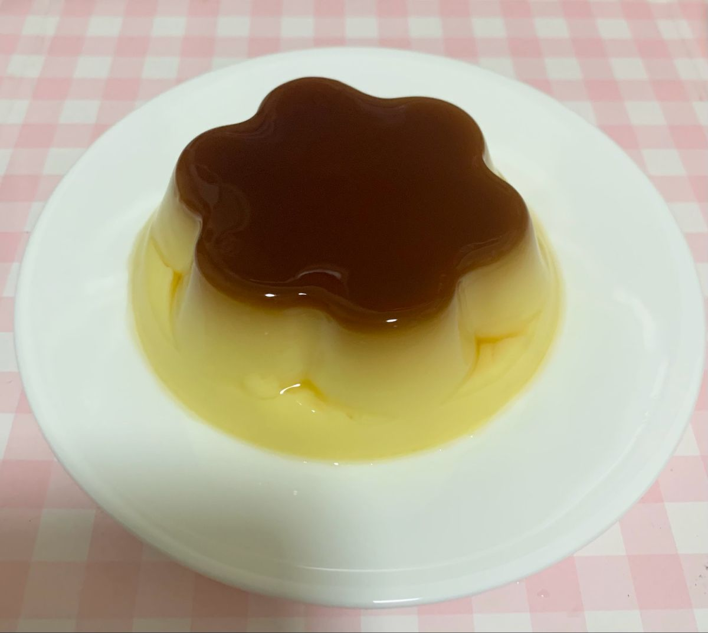
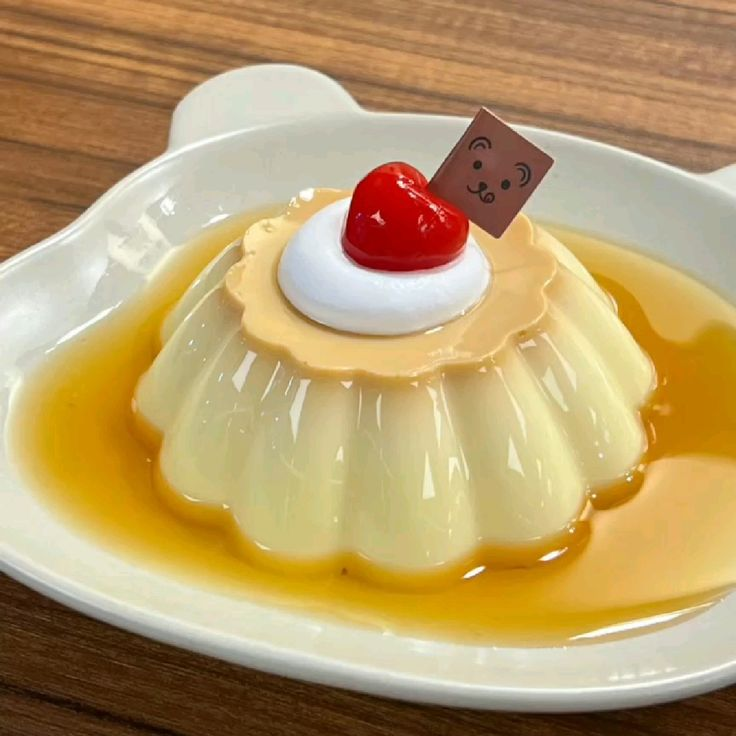
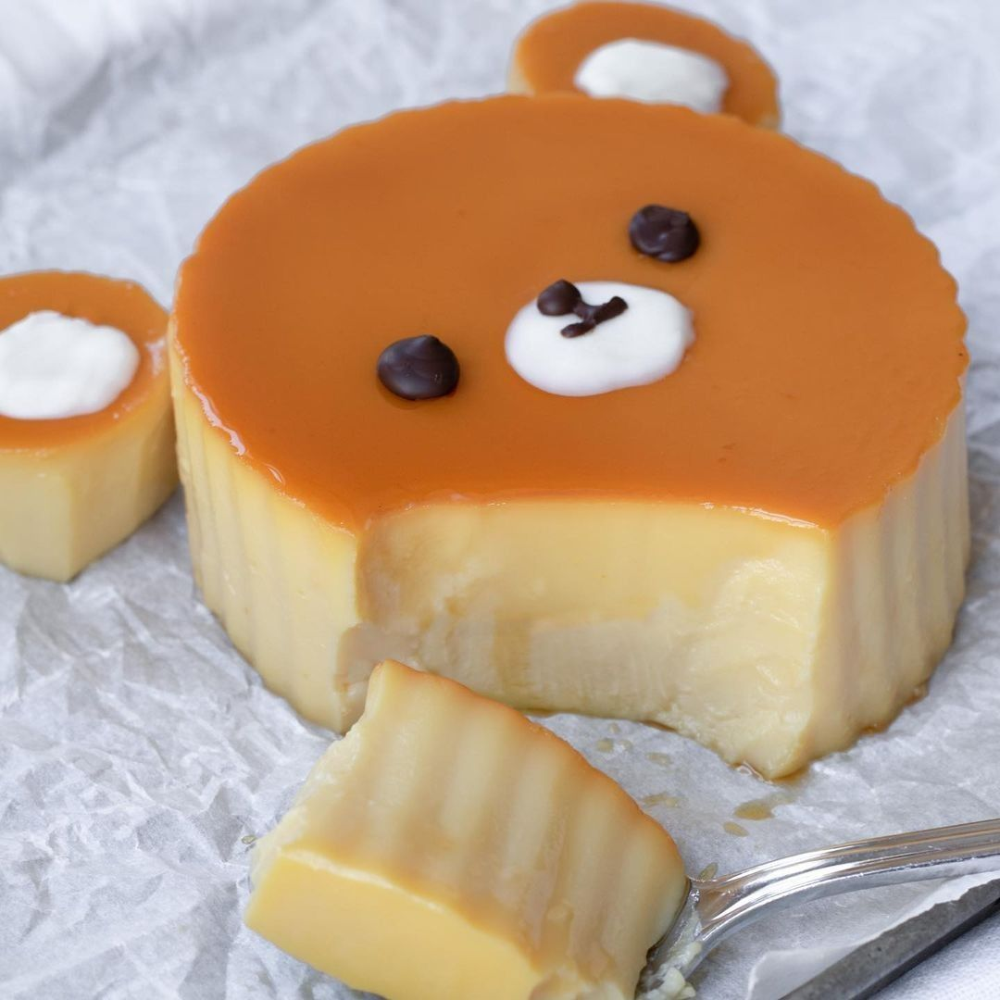
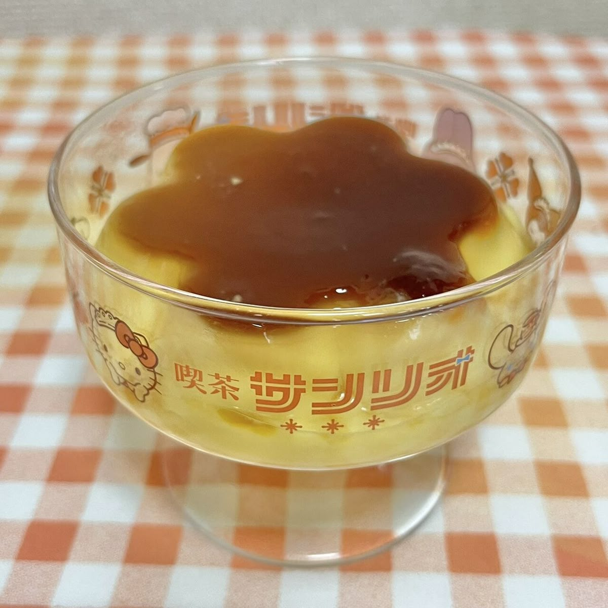

Ingrediënten
Voor de karamel ୧ ‧₊˚ 🍓 ⋅ ☆
- 150 g kristalsuiker
- 3 el water
Voor de flan ˙ . ꒷ 🍮 . 𖦹˙—
- 500 ml volle melk
- 1 vanillestokje (of 1 tl vanille-extract)
- 4 eieren
- 100g suiker
Bereiden
1. De karamel maken
- Doe de suiker en het water in een steelpan.
- Verwarm op middelhoog vuur zonder te roeren tot de suiker smelt en amberkleurig wordt.
- Giet de hete karamel onmiddellijk in een flan- of cakevorm (of kleine ramekins) en kantel de vorm zodat de bodem gelijkmatig bedekt is.
- Laat hard worden.
2. De custard bereiden
- KVerwarm de melk in een pan. Snijd de vanillestok in de lengte open, schraap de zaadjes eruit en voeg zaadjes + stokje toe aan de melk. Laat net onder het kookpunt trekken.
- Klop in een kom de eieren en suiker tot een glad mengsel.
- Giet de warme melk (vanillestokje verwijderen!) langzaam bij het eimengsel terwijl je roert.
3. De flan bakken
- Verwarm de oven voor op 150°C.
- Giet het custardmengsel in de vorm bovenop de gestolde karamel.
- Zet de vorm in een ovenschaal en vul de schaal met heet water tot halverwege de zijkant van de vorm (au bain-marie).
- Bak 45–60 minuten, tot de flan nét stevig is (hij mag in het midden nog licht wiebelen).
Afkoelen en uit de vorm halen
- Laat volledig afkoelen en zet minstens 4 uur (liefst een nacht) in de koelkast.
- Ga met een mes langs de randen en stort de flan voorzichtig op een schaal.
- De karamel loopt er dan mooi overheen.
